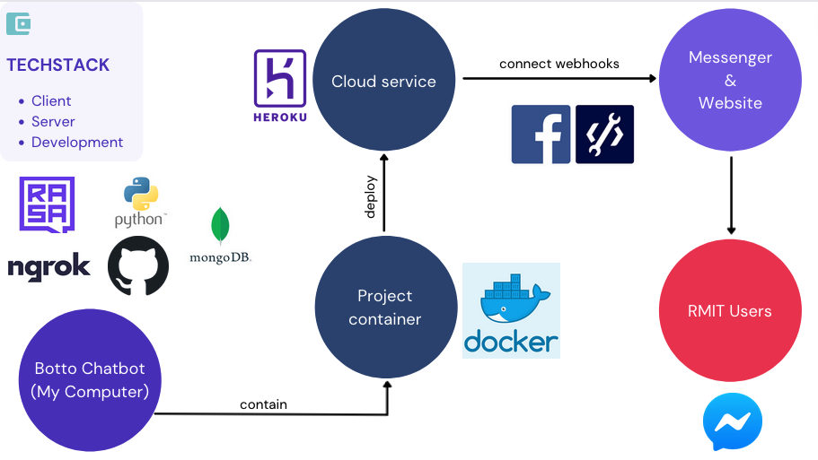

To facilitate the development process of the chatbot, our team takes advantage of a variety of tools and technologies. After extensive researching, we decided on using the Rasa framework, which has an advanced Natural Language Understanding component to support the making of Botto. Besides the famous Rasa NLU, Rasa Core, which uses Python to operate, helps developers become more flexible and effective with how we implement business logic into the chatbot. The chatbot models can be tested locally from the Terminal, but in times when the model needs to be tested in real-life settings, directly on Facebook Messenger, for example, our team will use Ngrok to tunnel our local server, exposing it to the Internet so as to establish webhook connections. Since Visual Studio Code IDE provides the most convenient extensions for Python development and most members of the team are already familiar with this IDE, we chose to use it as our primary IDE.
Once called for the product launch of our Chatbot, we must put some tools into action. Two of the most important tools are Docker and Heroku. Docker creates a container around our project, separating the software from other files in the computer, to ensure developers convenience when they want to deploy on Heroku or deliver the product to users. Since Ha Thu and Hoang have had previous experience in using these two platforms, it would be convenient to use them in the Botto chatbot project. MongoDB database is chosen to store user data, NLU training data, and FAQ data thanks to its flexibility in storing values.
